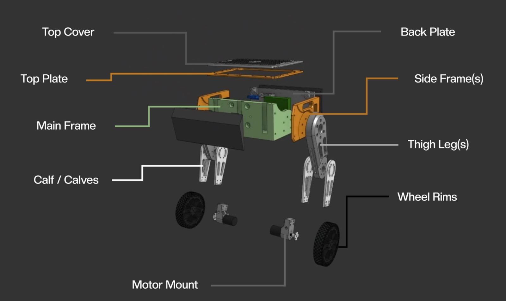
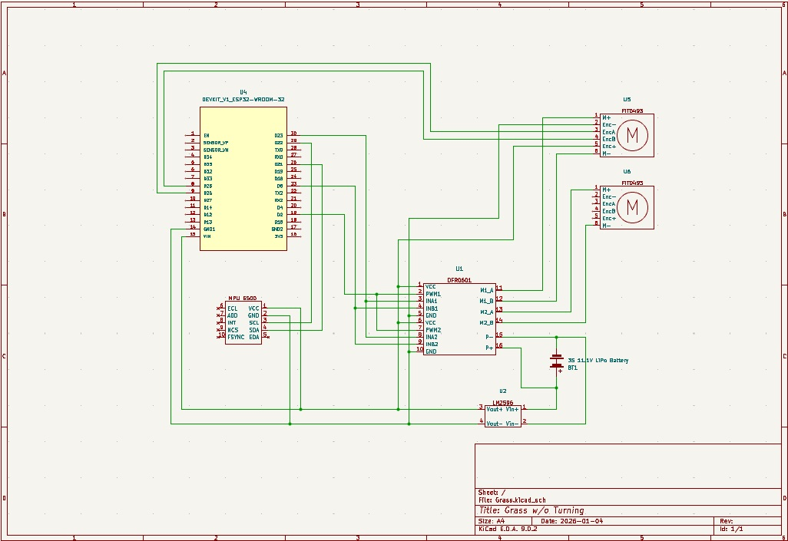
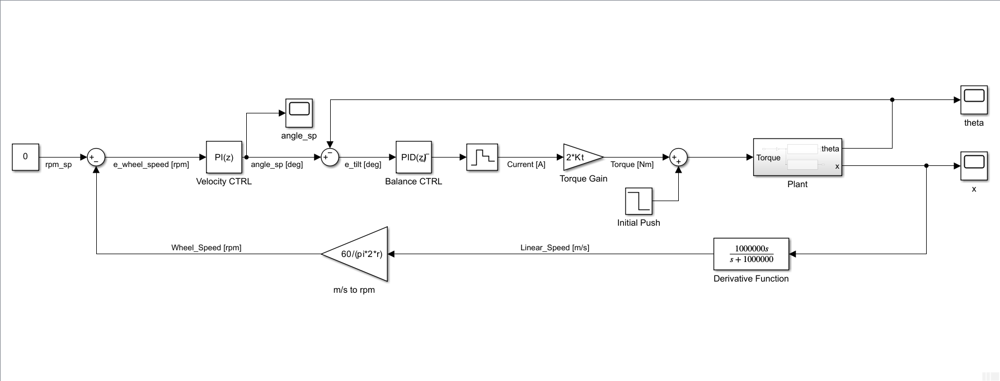

Overview
Grass is a single-axis wheeled bipedal self-balancing robot with wireless control. It uses an internal IMU to estimate it's tilt angle and encoders to control wheel speed.
The system functions as a carted inverted pendulum, maintaining upright stability by actively driving two geared DC motors using a cascaded PID.
Skills Used
Video
Details
Mechanical Design

Grass was designed to be printed almost entirely out of PLA with the exception of the tires and the front and back bumpers to save on both time and costs. Since we knew that the robot would frequently fall over during balance tests, we chose to print the bumpers out of TPU to help with shock absorption. This also helped to protect the electronics hidden in the chassis, including the battery, microcontroller, and motor controller. To make the robot easier to balance, we chose to keep the centre of mass of the robot high at a height of 20cm with respect to the wheels. This came from our intuition and calculations from estimating the system as an ideal inverted pendulum. To keep the system as close to our estimation as possible, we designed the legs of the robot to be thin and with weight-saving holes where possible. The legs also feature holes to help guide the motor and encoder wires through the legs and into the chassis, keep the robot clean and the wires safe.
Components

The components used in this project consist of a microcontroller, two brushed DC motors with encoders, an inertial measurement unit, a 3S Lithium Polymer battery, a buck converter, and a dual channel DC motor controller. One of our most important parameters was cost, having an ideal budget of $200. For that reason, the microcontroller we chose was the ESP32 WROOM Module which comes with an onboard bluetooth chip and a dual core processor. For a robot of this level of complexity, we found stronger microcontrollers, such as the teensy 4.1, to be overkill and weaker ones, like arduino, to be insufficient. The motor we chose for our wheels was the FIT0493 DC motor which is a 350RPM 12V motor with a rated stall torque of 12 kgcm. At a price of $60, the motor came with a high resolution quadrature encoder at 374 pulses per revolution and sufficient torque for the robot to drive forwards and backwards.
Control Theory

EDIT: Write about this component here.
Firmware

EDIT: Write about this component here.
Reflection
What Went Well
EDIT: Talk about the parts of the project you're proud of, what worked better than expected, or any breakthroughs you had.
Challenges
EDIT: Describe the biggest obstacles you ran into and how you dealt with them.
What I Would Do Differently
EDIT: If you were starting over, what would you change? Better tools, different approach, more testing, etc.